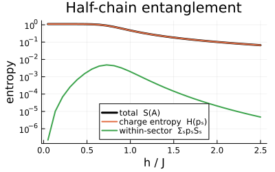

Defining Clock operators
This example defines the $Z_D$ clock operators and connects it to the generic Hilbert-space and matrix-representation machinery. It then uses the global clock charge to diagonalise a Hamiltonian sector by sector and to resolve the entanglement entropy of a subsystem.
using FermionicHilbertSpaces, LinearAlgebra, Plots, Arpack
import FermionicHilbertSpaces: AbstractBasisState, AbstractSym,
GenericHilbertSpace, apply_local_operator, mat_eltype,
symbolic_group, SectorConstraint
import FermionicHilbertSpaces.NonCommutativeProducts: @nc, mul_effectDefining the clock operators and states
The clock operators are defined on a local Hilbert space of dimension $D$, with basis states $|n\rangle$ for $n = 0, 1, ..., D-1$. The operator $X$ shifts the local clock value, $X |n\rangle = |n + 1\rangle$, and $Z$ measures the local clock value: $Z |n\rangle = \exp(2π i n / D) |n\rangle$.
struct ClockOp{T} <: AbstractSym # A clock operator of type T (:X or :Z).
site::Int
adjoint::Bool
end
Base.adjoint(op::ClockOp{T}) where T = ClockOp{T}(op.site, !op.adjoint)
X(i) = ClockOp{:X}(i, false)
Z(i) = ClockOp{:Z}(i, false)
@nc ClockOp
# We define mul_effect to return nothing, so that no symbolic simplification is performed when multiplying clock operators.
mul_effect(::ClockOp, ::ClockOp) = nothing
struct ClockState{D} <: AbstractBasisState # A clock state with dimension D.
n::Int
ClockState{D}(n) where D = new{D}(mod(n, D))
end
# Action on local basis states.
# The last two arguments, `space` and `precomp`, are required by the interface but not used here.
# `space` can be used to dispatch on the type of hilbert space, while `precomp` can be used to pass precomputed data to the operator application for optimization purposes.
function apply_local_operator(op::ClockOp{:X}, state::ClockState{D}, space, precomp) where D
newstate = ClockState{D}(state.n + (op.adjoint ? -1 : 1))
amp = 1
newstate, amp
end
function apply_local_operator(op::ClockOp{:Z}, state::ClockState{D}, space, precomp) where D
amp = exp((op.adjoint ? -1 : 1) * 2π * im * state.n / D)
state, amp
end
# Clock operators have complex matrix elements.
mat_eltype(::Type{<:ClockOp}) = ComplexF64
# Associate operators with Hilbert-space factors.
symbolic_group(op::ClockOp) = op.sitesymbolic_group (generic function with 15 methods)This is enough to get most of the functionality of this package.
Using it in practice: Hamiltonian and conservation laws
Let's take the case D = 3 for 6 sites. We define a hamiltonian which conserves the particle number modulo D, and calculate the symmetry resolved entanglement entropy in the ground state.
D = 3
L = 6
states = [ClockState{D}(n) for n in 0:(D-1)]
Hs = [GenericHilbertSpace(k, states) for k in 1:L]
Hfull = tensor_product(Hs)
clock_hamiltonian(J, h) = -J * sum(X(i)' * X(i + 1) + hc for i in 1:(L-1)) - h * sum(Z(i) + hc for i in 1:L)clock_hamiltonian (generic function with 1 method)Define a constraint and a function which divides the hilbert space up into sectors.
function clock_sectors(H)
constraint = SectorConstraint(
values -> mod(sum(values), D), # sum the values mod D where
state -> state.n, # the values are the local clock values
factors(H) # of each factor of the hilbert space
)
return constrain_space(H, constraint)
end
Hzd = clock_sectors(Hfull)
Hhalf = clock_sectors(tensor_product(Hs[1:div(L, 2)]))27-dimensional SectorHilbertSpace
Parent: ProductSpace(27-dim, 3 factors)
Sectors: [0 (9-dim), 1 (9-dim), 2 (9-dim)]Functions to calculate entropies.
shannon(p; tol=1e-12) = -sum(x * log(x) for x in p if x > tol)
von_neumann(ρ) = shannon(eigvals(Hermitian(ρ)))
function symmetry_resolved_entropy(ρ, Hsub, D; tol=1e-12)
p, Sq = zeros(D), zeros(D)
for q in 0:(D-1)
inds = indices(q, Hsub)
block = ρ[inds, inds]
p[q+1] = real(tr(block))
p[q+1] > tol && (Sq[q+1] = von_neumann(block / p[q+1]))
end
Hcharge = shannon(p)
Swithin = dot(p, Sq)
Stotal = von_neumann(ρ)
@assert isapprox(Stotal, Hcharge + Swithin; atol=1e-6)
(; Hcharge, Swithin, Stotal)
endsymmetry_resolved_entropy (generic function with 1 method)We now calculate and plot the symmetry resolved entanglement entropy in the ground state of the hamiltonian for a range of values of $h$
Hgs = sector(0, Hzd)
hs = range(0.05, 2.5; length=30)
ptmap = partial_trace(Hgs => Hhalf)
r = map(hs) do h
hmat = representation(clock_hamiltonian(1.0, h), Hgs, :dense)
vals, vecs = eigs(Hermitian(hmat), nev=1, which=:SR)
ρhalf = ptmap(vecs[:, 1])
symmetry_resolved_entropy(ρhalf, Hhalf, D)
end
p1 = plot(hs, getproperty.(r, :Stotal), lw=3, c=:black, label="total S(A)",
xlabel="h / J", ylabel="entropy", size=(400, 250),
title="Half-chain entanglement", yscale=:log10, legend=:bottom)
plot!(p1, hs, getproperty.(r, :Hcharge), lw=2, label="charge entropy H(pₛ)",)
plot!(p1, hs, getproperty.(r, :Swithin), lw=2, label="within-sector ΣₛpₛSₛ")
This page was generated using Literate.jl.